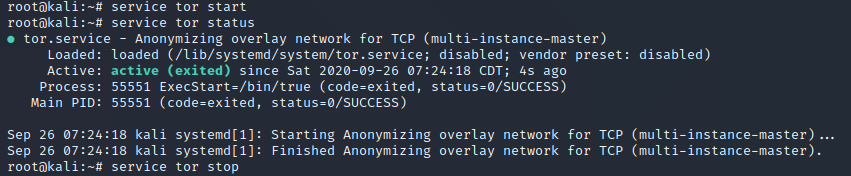
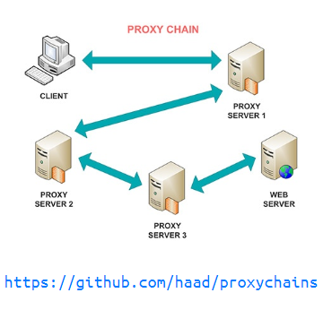
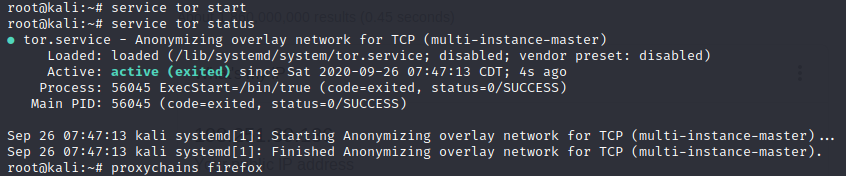

Tor
apt-get install tor


Proxychains

- a tool that forces any TCP connection made by any given application to follow through proxy like TOR or any other SOCKS4, SOCKS5 or HTTP(S) proxy
- configure proxychains to work properly: nano /etc/proxychains.conf
-
- useful to uncomment proxy_dns in order to prevent DNS leak
